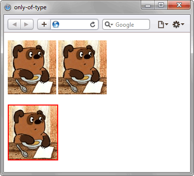

Псевдокласс :only-of-type
Псевдокласс :only-of-type применяется к дочернему элементу указанного типа, только если он единственный у родителя. Аналогичен использованию :first-of-type:last-of-type или :nth-of-type(1):nth-last-of-type(1).
Синтаксис
Селектор:only-of-type { ... }Пример
<!DOCTYPE html>
<html>
<head>
<meta charset="utf-8">
<title>only-of-type</title>
<style>
img:only-of-type {
border: 2px solid red; /* Параметры рамки */
}
</style>
</head>
<body>
<p><img src="images/figure.jpg" alt="">
<img src="images/figure.jpg" alt=""></p>
<p><img src="images/figure.jpg" alt=""></p>
</body>
</html>В примере псевдокласс :only-of-type применяется к селектору img, в правилах стиля которого задаётся рамка красного цвета для картинок. Сама рамка добавляется к изображениям, которые у своих родителей (в данном случае это тег <p>) встречаются только один раз. В первой строке повторяется два изображения, поэтому псевдокласс не действует, во второй строке вставлено одно изображение, для него :only-of-type и работает.

Рис. 1. Применение псевдокласса :only-of-type к картинкам
Спецификация
| Спецификация | Статус |
|---|---|
| Selectors Level 4 | Рабочий проект |
| Selectors Level 3 | Рекомендация |
Браузеры
| Internet Explorer | Chrome | Opera | Safari | Firefox |
| 9 | 1 | 9.5 | 3.2 | 3.5 |
| Android | Firefox Mobile | Opera Mobile | Safari Mobile |
| 2.1 | 1 | 10 | 3.2 |